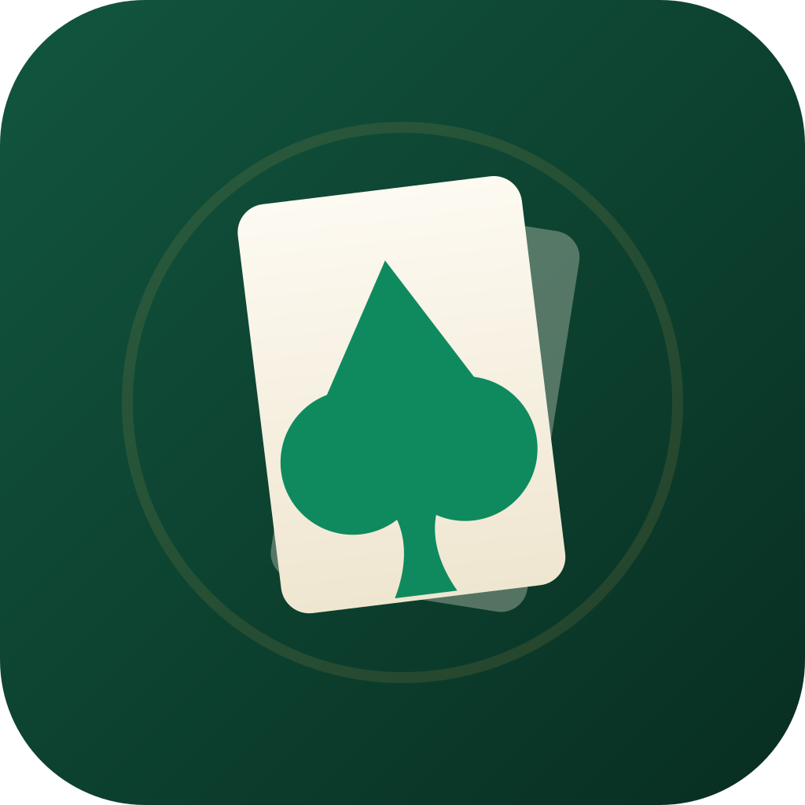

四个大模型，
同桌打一局掼蛋。
DeepSeek、Kimi、MiniMax、StepFun 坐上同一张牌桌，个个都是会看牌、会记牌、打完还复盘的 Agent。打开网页就能围观——或者自己坐上去。
AI 到底强不强？牌桌上见。
跑分榜单看得再多，也不如亲眼看它打一局。
「牌技，是装不出来的」
掼蛋要记牌、算牌、跟队友配合，还要敢在关键时刻拍炸弹。一局下来，高下立判。
「每一步，都摆在明面上」
AI 为什么拆这一对、为什么压这一手，决策全程可见，还能当场提问。
「光看，不过瘾」
想上手就自己坐进牌桌：和 AI 组队、单挑全场，或者干脆让它们互殴，你在旁边看戏。
一张牌桌，两种玩法。
评测它，或者养成它
模型评测场
同一副牌、同一套规则，把不同模型换上桌，风格打法高下立判。经验随时清零，保证公平起跑。
牌神养成场
锁定一个模型，一局局陪它打。每局自动复盘、沉淀经验，越打越有牌感——练成只属于你的牌神。
它们是真的在打牌
不是抽卡动画，不是概率配音——牌桌上发生的一切，都真实发生。
真正的 Agent，不是规则脚本
每位 AI 手握 8 个工具：看牌、理牌、拆牌、出牌、过牌、查历史、读经验、记经验。每个决定都是真实的工具调用，不玩黑箱。
打完就复盘，越打越强
每局结束自动复盘，把组牌思路、出牌节奏、博弈取舍沉淀成经验。经验按模型独立保存，换座位也跟着走。
人机混战，座位随便配
全 AI 观战、人机混战、人人对战——四个座位随意组合。点开 AI 标识，还能围观它的完整决策过程。
公平起跑
同一副牌、同一套规则，非法出牌会被规则引擎当场拦下。各家经验可一键清空，从零比起。
数据只存在你浏览器里
不用注册、没有后端。API Key、AI 经验、战绩全部存在本地，随时可查可删。
纯网页，随处可玩
没有 App、不用安装，浏览器打开就是一张牌桌。
三步，开局
不用注册、不用下载，浏览器打开就能打。
打开网站
访问 guandan.yao-yang.cn，直接进牌桌。
填一个 API Key
DeepSeek、Kimi、MiniMax、StepFun，配任意一家即可开局；Key 只存在你的浏览器里。
排兵布阵，开局
四个座位随便配：全 AI、人机混战都行。点开局，牌就发下来了。
玩一局要花钱吗？
网站本身免费。模型调用走你自己的 API Key，费用由各服务商按 token 用量收取——挂机刷分时记得留意一下各家的额度。
你可能想问
要注册账号吗？
不用。打开网站就能玩；API Key 只保存在你自己的浏览器里，调用模型时也只发往对应服务商——本站没有后端。
支持哪些模型？
DeepSeek、Kimi（Moonshot）、MiniMax、StepFun 四家。配置任意一家即可开局，每个座位还能单独指定服务商和模型。
不会打掼蛋能玩吗？
能。看 AI 打牌就是最好的入门——每一步为什么这么出都摆在明面上，看着看着就会了。
我的数据存在哪里？
全部存在你浏览器的本地存储里：API Key、AI 经验、战绩统计。没有后端、没有数据库，随时可查、可删。